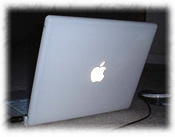

| 私のパソコン環境です。最初はWindowsでしたが、今ではMacの大ファンに... |
|
+++5台目(現在)+++

2005年の夏に買った2台目のiBook(G4 1.33GHz)。iBookは見た目も大きさも気に入っています。ここで新旧iBookの比較をしてみました。
|
|
+++4台目+++
2001年8月、ついに念願のiBookを購入しました(G3 500MHz)。マックの存在を知ってから、ずっと欲しいと思ってきました。 このとき出たiBookは4 シリーズあり、その1番下のCD-Romのみのものを購入し ましたが、エアポートカードを入れて無線ランを使っているので、部屋中どこ にいてもインターネットができます。また、メモリを320Mに増設し、 MacOSX(マックOSテン)を使っています。OSXは01年3月に発売されたばかりの新しいOSなので、まだ一般に出ているソフトが少なく、3台目のVaioと並行して使っていますが、今ではメインのマシンになりつつあります。
|
|
+++3台目+++
そして3台目は、99年8月に日本から父に持ってきてもらった Sonyのノート、Vaio PCG-XR1(OS: Windows2000, CPU: PentiumII 333MHz, RAM(メモリ): 192MB, HDD: 6.4GB, CD-Rドライブ内蔵, 13.3インチモニター) です。買うことにした決め手はCD-R内臓っててこと。外付けだとCD-Romを見るのにいちいちパソコンを再起動なくちゃなりません。でも全体としてはあまり好きになれませんでした。Vaio独特のジョグダイアルは使いにくいし、何よりも Vaio は起動時に勝手にいろんなソフトを立ち上げてしまったり、アンインストールができないので、すぐに「システムリソース不足」となっていくつもウィンドウを開くことができなくなるのです。今でも、Windows2000を入れて使っていますが、必要最低限にしか使いません。
|
|
+++2台目+++
95年8月に2台目のノートを日本で購入。IBMのThink Pad 530CS (OS: Windows95, CPU: Am5x86-133MHz, RAM(メモリ): 20MB, Modem: Mwave, HDD: 720MB, 外付CD-ROM-4倍速) です。IBMの当時の期待作、Mwaveは内部エラーばかり出て悩まされ続けました。でも、教えてくれる人のいない異国のアメリカで、30時間かかった Windows95 の再インストールをしたり、毎日のようにプロバイダやソフト会社への問い合わせをして、パソコンや Windows についてかなり理解を深めることができました。数あるトラブルに「2度とIBMは買わない」と逆恨みしていましたが、その後、会社や家で Windows系のパソコンを使うようになって、キーボード操作やデザインがよさで、私は ThinkPad が好きだなぁ、と感じる今日このごろです。
|
|
 +++1台目+++ +++1台目+++
初めてパソコンを買ったのは92年頃。NECのノートブック、PC9801/NSE40 でした。CPUはi386、メモリは640K、ハードディスクは 40M、OSはMS-DOS3.3 です。一太郎、ワードパーフェクト、アシストカード、スターファックス、Wterm（Nifty用）を使っていました。何も知らなかった私は「パソコンは一生もの」と信じていたので、バッテリーに続き、ハードディスクまで瀕死の状態になったときはショックでした。また、OS、メモリやハードディスク容量が、買ったときには周りがびっくりするほど大きくて新しくて早かったのに、４年もしないうちに、化石と言われるほど古くなっていたことに驚いたのでした。
|